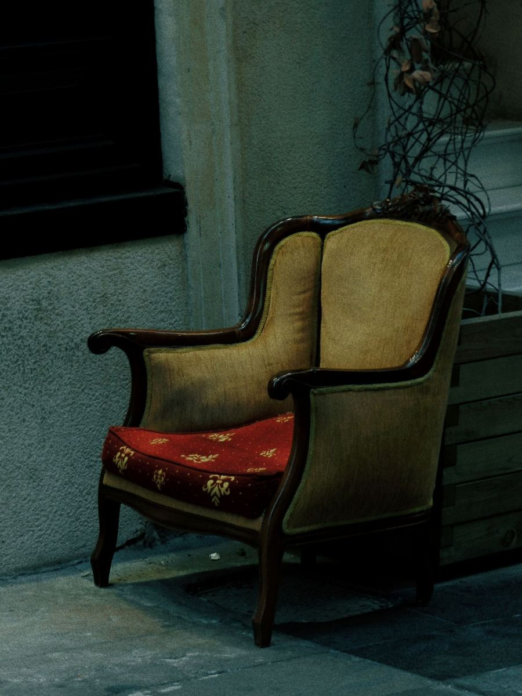

Shu kresloga qaysi rang mos? Qancha kerak? 19:02Rasm qabul qilindi. Mutaxassisimiz 5 daqiqa ichida javob beradi. 19:02
Madina · Forest mutaxassisiMatosi velurga o'xshaydi, rangni yaxshi oladi. Yog'och ramkasi bilan Zaytun yoki Antrasit chiroyli chiqadi. Kreslo uchun tozalovchi va 2 ta sprey yetadi. 19:05
Zaytun
Antrasit
Savatga qo'shish ↗
Antrasit bilan